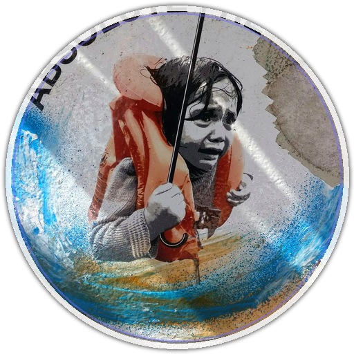

Can a volunteer use it quickly?
Open the Volunteer App to type a field note, attach image or audio context, and see the triage card a volunteer would use.
Open Volunteer App →
Edge-Triage Metrics sourceDuring floods, wildfires, earthquakes, and hurricanes, volunteers receive messy text reports and photos when connectivity may be unreliable. Edge-Triage uses Gemma 4 on edge hardware to turn each report into a triage label, priority, action pack, red-flag check, and local handoff record while keeping humans in control.
Edge-Triage has something for field, ML, Gemma, agents, and responsible-AI reviewers. Use this guide to jump straight to the proof that matters for your judging lens.
Open the Volunteer App to type a field note, attach image or audio context, and see the triage card a volunteer would use.
Open Volunteer App →Check the two validated profiles, full-50 run IDs, latency budget, and why the frontier is more honest than a raw ledger maximum.
Open Metrics source →Open Optimization Mode to see candidate profiles, keep/discard decisions, ablations, and the self-learning loop behind the final profiles.
Open Optimization Mode →Read Evidence for local multimodal Gemma 4 value, privacy, human control boundaries, limitations, and reproducible proof.
Open Evidence →Edge-Triage is a strong fit for the Main Track because it is a working disaster-response product with clear evidence, safety boundaries, and a judge-ready experience. It also connects naturally to the Impact Track through resilience and trust, and to the Special Technology Track through the local Gemma stack used to make it practical at the edge.
Working product experience, guarded live API path, benchmark-backed frontier metrics, notebooks, video assets, and reproducible documentation.
Disaster triage is directly Global Resilience. The constrained labels, conservative next actions, guarded live preview, auditability, and human-control boundary support Safety & Trust.
llama-cpp-python..litertlm download and backend scaffolding.Modelfile for local one-command packaging.Volunteer Mode shows field-facing triage. Optimization Mode shows the frontier evidence behind the submitted profile.
Curated showcase mode is intentionally simple: choose one of the fixed public-safe scenarios below and the right-hand card updates with the related image and analysis. Switch to Live Gemma preview only when you want to upload a new image to the guarded API.
Choose one of the field examples to render the triage result.
Select a report to view conservative routing guidance.
Select a report to see what the model understood from the scene.
The live site is the fastest review path, but the repository also includes runnable notebooks for judges who want to inspect the Gemma 4 setup, the benchmark ledger, and the research loop directly. Use the notebooks from the public GitHub repository; no secrets are required for the offline analysis path.
Use the repository for the working product experience, guarded live API, CLI, tests, Docker files, metrics ledger, and media assets. This is the best path for reviewers who want the complete implementation.
Open public repo →Shows the competition-facing notebook flow: install dependencies, locate or download the GGUF model/projector, run a multimodal triage example, and connect the demo back to the current frontier. In Google Colab or Kaggle, use a GPU runtime and expect model downloads unless artifacts are already attached.
Open notebook →Reads results.tsv and visualizes keep/discard outcomes, F1-over-time, and the autonomous optimization history. It is intentionally secondary to docs/CURRENT_FRONTIER.md, which filters diagnostic artifacts for public claims.
Edge-Triage is designed for the messy middle of a crisis: reports arrive fast, connectivity is uncertain, and responders need conservative routing support they can audit later. The product evidence connects the story to measured runs, public-safe scenarios, and reproducible documentation.
Gemma 4 is central because the same local multimodal model family can read short field notes plus image context, run through GGUF/llama.cpp-style edge packaging, and support both the volunteer workflow and the research evaluation loop.
The output is intentionally constrained to a label, priority, latency, confidence context, and conservative next action. It supports incident command and trained responders; it does not replace them.
The speed and accuracy profiles are tied to run IDs in results.tsv and summarized in docs/CURRENT_FRONTIER.md, keeping README, demo, video, and Kaggle writeup claims aligned.
Ambiguous reports still need responder judgment. Live Gemma preview is guarded and rate-limited, so the curated showcase remains the reliable public review path; no medical or incident-command authority is delegated to the model.